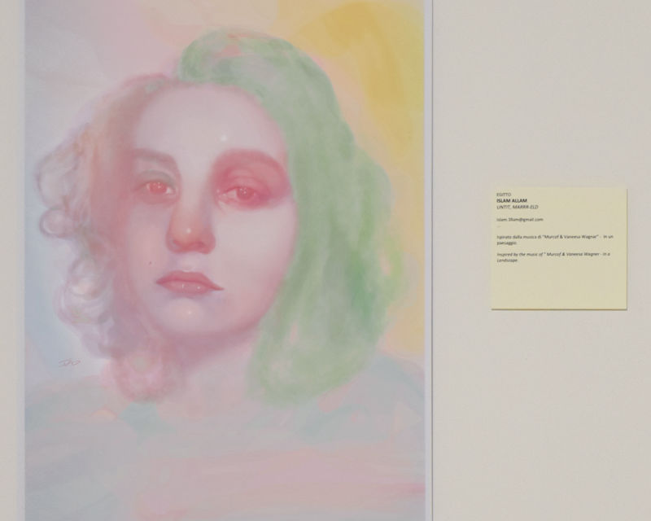

My participation in Beyond Border/ Venicelands Artprize exhibition.
untit,NaTtttt-eld chosen to be used for official poster of the exhibition.
untit,NaTtttt-eld chosen to be used for official poster of the exhibition.
My Participates in Beyond Border/ Venicelands Artprize exhibition, Italy
untit,MarrR-eld. Beyond Border/ Venicelands Artprize exhibition, Italy
untit, NaTtttt-eld. Beyond Border/ Venicelands Artprize exhibition, Italy
My participation in “Not The F*cking Help†exhibition organized by Blank S pace / Oslo, Norway
My participation in “Not The F*cking Help†exhibition organized by Blank S pace / Oslo, Norway
My participation in “Not The F*cking Help†exhibition organized by Blank S pace / Oslo, Norway
My participation in “Not The F*cking Help†exhibition organized by Blank S pace / Oslo, Norway
My participation in “Not The F*cking Help†exhibition organized by Blank S pace / Oslo, Norway
entitle ğ—§ğ—µğ—² ğ—¨ğ—¹ğ˜ğ—¶ğ—ºğ—®ğ˜ğ—² ğ—©ğ—¶ğ˜€ğ˜‚ğ—®ğ—¹ ğ—–ğ—¼ğ—»ğ—±ğ—¶ğ˜ğ—¶ğ—¼ğ—» artworks featured on ENVISION ART Magazine,to view the full post Click Here
entitle ğ—§ğ—µğ—² ğ—¨ğ—¹ğ˜ğ—¶ğ—ºğ—®ğ˜ğ—² ğ—©ğ—¶ğ˜€ğ˜‚ğ—®ğ—¹ ğ—–ğ—¼ğ—»ğ—±ğ—¶ğ˜ğ—¶ğ—¼ğ—» artworks featured on ENVISION ART Magazine 2
entitle ğ—§ğ—µğ—² ğ—¨ğ—¹ğ˜ğ—¶ğ—ºğ—®ğ˜ğ—² ğ—©ğ—¶ğ˜€ğ˜‚ğ—®ğ—¹ ğ—–ğ—¼ğ—»ğ—±ğ—¶ğ˜ğ—¶ğ—¼ğ—» artworks featured on ENVISION ART Magazine 3
 untit,SarRRraAa-eld featured on Fake Magazine 1st issue, Chosen to be the cover also,
untit,SarRRraAa-eld featured on Fake Magazine 1st issue, Chosen to be the cover also, untit,SarRRraAa-eld featured on Fake Magazine 1st issue.
untit,SarRRraAa-eld featured on Fake Magazine 1st issue.
untit,SarRRraAa-eld featured on Fake Magazine 1st issue.